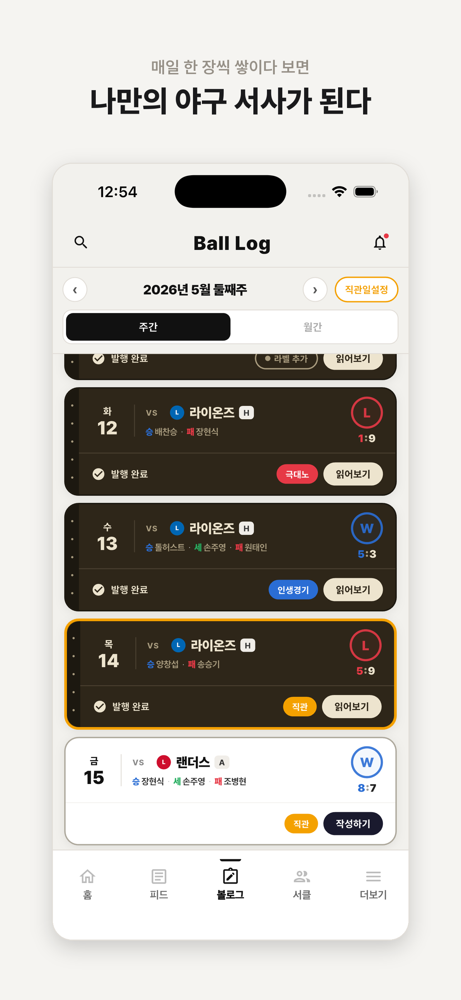
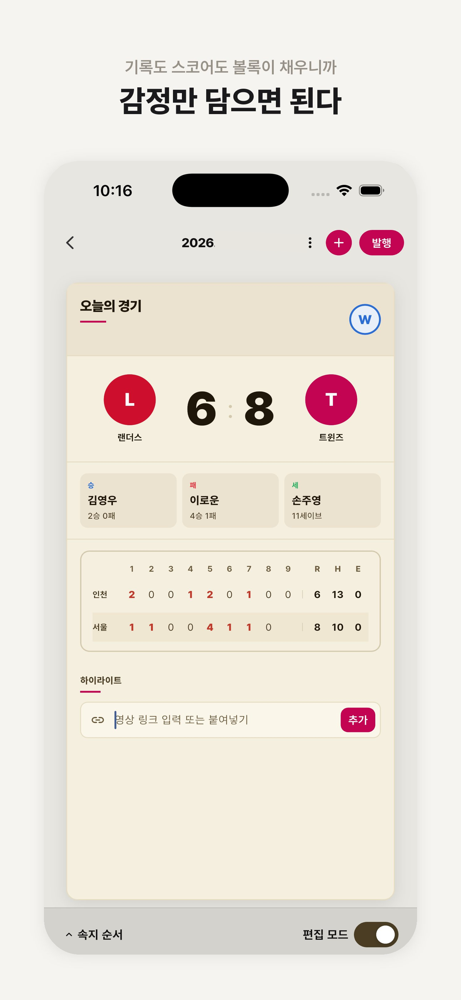
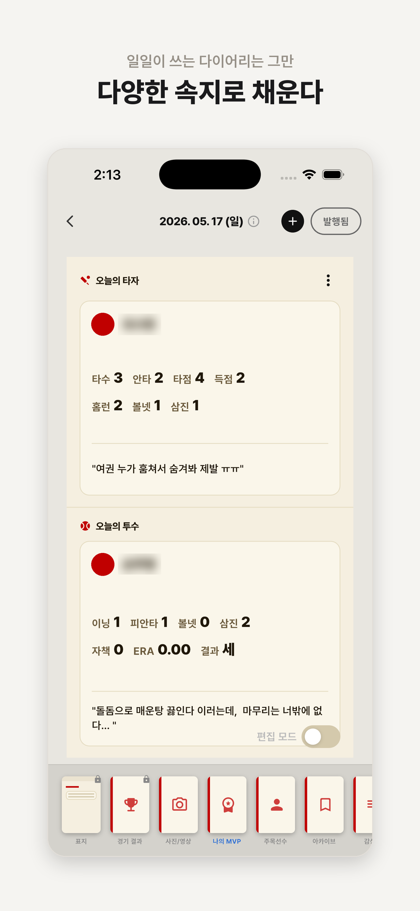
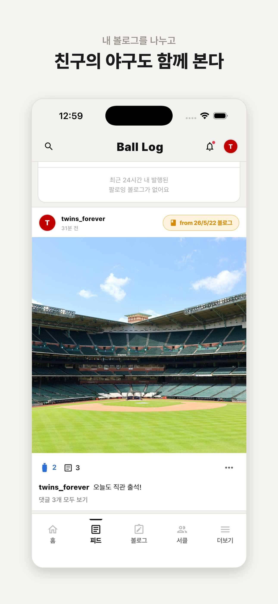
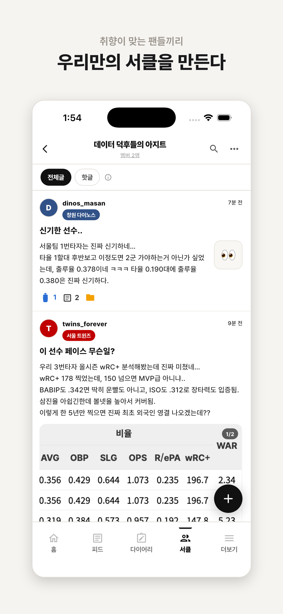
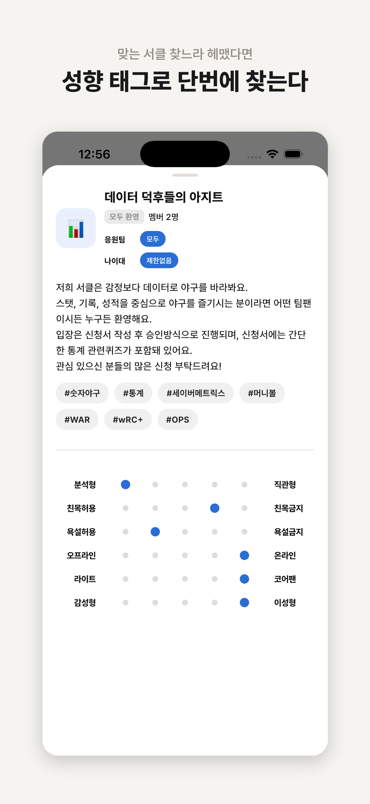
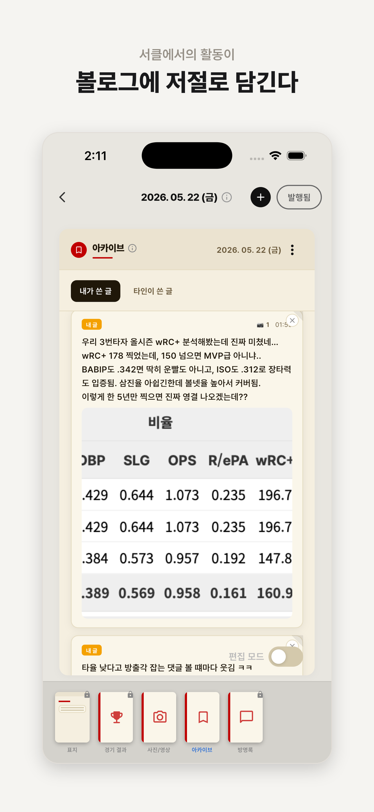

기록하고, 나누고, 모이는
야구팬만을 위한 전용 플랫폼, 볼록.
지금 1차 베타 테스터를 모집하고 있어요.
볼록이 해결하고자 하는 것들이에요.
야구팬을 위해 설계된 기록 · 공유 · 커뮤니티 플랫폼.
현재 개발 중이에요. 베타 테스터가 되면 가장 먼저 만날 수 있어요.







볼록이 성장했을 때, 당신이 처음부터 함께했다는 걸 뱃지가 말해줘요.
초기 베타테스터 뱃지는 이후 어떤 방법으로도 얻을 수 없어요.
* 개발자 노트(향후 볼록의 방향성 및 개발자가 구상하는 청사진)는 2차 베타테스트 이후 유저가 쌓여감에 따라 천천히 공개될 예정이에요. 정규오픈 시 삭제 예정.
같은 방 팬들과 볼록에서 먼저 만나요. 이후엔 직접 서클을 만들고 확장도 할 수 있어요.
1차 베타를 쓰면서, 같은 경기를 함께 기록하고, 공유하고, 회고하는 모습을 상상해보세요.
10년이 지나고 되돌아봤을 때 남겨진 "나만의" 인생경기들 — 그 시작이 지금이에요.
2차 베타가 시작되면 주변 야구팬 친구들에게 가장 먼저 알려주세요.
볼록 열풍의 시작점이 되어주세요.
현재 아주 소수의 인원을 대상으로 1차 베타테스트를 진행하려고 해요.
앱 내 중대한 오류를 함께 찾아주실 분들을 모집해요.
1차 안정화 이후 2차 베타테스트가 진행돼요. TestFlight 수용 인원 내에서 운영되기 때문에 신청 후 승인 방식으로 진행되며, 2차 참여자는 다음 시즌 정규오픈까지 볼록을 계속 이용하실 수 있어요.
신청서를 작성해주시면 검토 후 다운로드 링크를 메일로 개별 발송해드려요.
iOS(TestFlight) · Android 모두 지원 예정이에요.